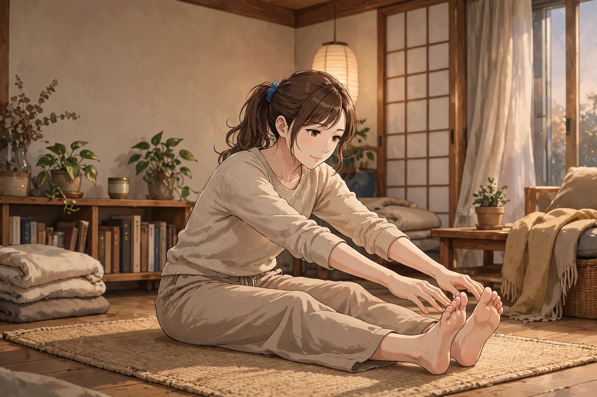
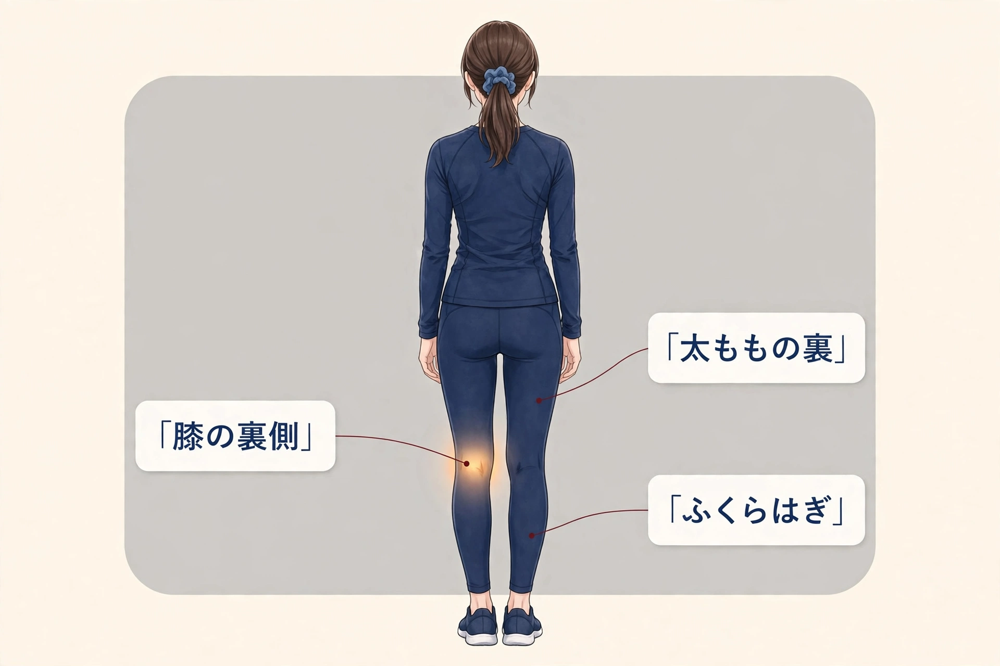
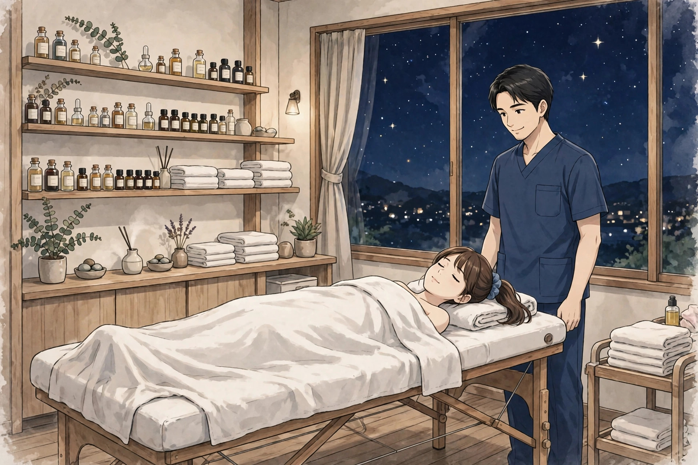

膝裏の張り
美容整体ステラ・ポラリス東三国｜大阪市淀川区東三国・東三国駅徒歩5分・女性向け

膝の裏側のつっぱりをゆるめて、伸びやかな脚のラインへ
膝の裏が張って、膝をまっすぐ伸ばしきれない。歩くときに膝裏がつっぱる——膝裏の張りは、太ももの裏側の筋肉の硬さと深く関わるお悩みです。膝裏には太もも裏からふくらはぎへつながる筋肉や、巡りの通り道が集まっていて、座りっぱなしの生活や姿勢のクセで固まりやすい場所と言われています。膝が伸びきらないと歩幅が小さくなり、脚全体のラインの見え方にも影響します。このページでは、膝裏の張りの背景にある仕組みと、膝がすっと伸びて歩きやすく感じられる状態を目指す当サロンでのケア、ご自宅でできるセルフケアをご案内します。膝裏は自分では見えにくく、ほぐしにくい場所でもあります。張りを溜めたままにすると、歩き方や姿勢に少しずつ影響が出やすいため、早めの見直しがおすすめです。
ご予約はこちら（Coubic）こんなお悩みありませんか
- 膝をまっすぐ伸ばすと、裏側がつっぱって伸びきらない
- 歩くとき、膝裏に引っかかるような張りを感じる
- 長時間座ったあとに立ち上がると、膝裏が固まっている感じがする
- 太ももの裏を触ると、板のように固く感じる
- 前屈をすると、膝裏から太もも裏が強く突っ張る
- 膝裏がむくんだように重く、押すと鈍い感じがある
- 歩幅が小さくなり、脚が前に出にくい気がする
当てはまる項目が多いほど、太ももの裏側から膝裏にかけての筋肉の硬さが積み重なっている目安とされています。膝裏の張りは、膝だけの問題ではなく、骨盤の傾きや歩き方のクセともつながっています。次のセルフチェックで、膝の伸び具合の傾向を確かめてみましょう。
簡単セルフチェック（膝の伸びチェック）
安全な場所で、膝の伸び具合を確かめる簡単な方法です。
- 壁に手をついて立ち、片脚ずつゆっくり膝を伸ばしきってみます。裏側のつっぱり感に左右差がないかを確認します。
- 椅子に浅く座り、片脚を前に伸ばしてかかとを床につけ、つま先を手前に向けます。膝裏の伸び感を確かめます。
- 膝が伸びきらない、裏側が強く突っ張る場合は、太ももの裏側の筋肉が固まっている目安と言われています。痛みがあるときは無理をしないでください。
※これは診断ではありません。ご自身の状態の傾向を知る目安としてお使いください。
膝裏の張りの原因と仕組み
膝裏を通る筋肉と張りの仕組み
膝の裏側には、太ももの裏の筋肉（ハムストリングス）が骨盤から膝下へつながり、ふくらはぎの筋肉と重なるように通っています。膝を伸ばす・曲げる動きのたびに働く場所で、硬くなると膝を伸ばしきる動作でつっぱりを感じやすくなります。図1のように、太もも裏から膝裏、ふくらはぎまでは一本につながったラインとして働いていて、一部の硬さが全体の動きに影響します。膝裏のくぼみには、神経や血管など大切なものも通っているため、ほぐす際はやさしい圧で丁寧に進めることが大切です。

図1 太ももの裏から膝裏、ふくらはぎへつながるラインと、張りが集まりやすい場所のイメージ。姿勢や座り方によって、張りの出方には個人差があります。
骨盤の傾きと太もも裏
太ももの裏の筋肉は骨盤の下部につながっているため、骨盤が後ろに傾く姿勢が続くと、引っ張られた状態が続きやすくなると言われています。座るときに浅く腰かけて背中を丸めるクセがある方は、太もも裏から膝裏にかけて張りが溜まりやすい傾向があります。姿勢と膝裏の張りは、離れた問題ではありません。長時間のデスクワークでは、膝を曲げたままの姿勢が続き、太もも裏が縮んだ状態で固まりやすくなります。立ち上がるときに膝裏の張りを感じる方は、この影響が出ている目安です。
巡りの通り道とむくみ感
膝の裏側には、脚の巡りの大切な通り道が集まっています。まわりが固まると巡りが滞りやすく、膝裏が重くむくんだように感じることがあると言われています。夕方に膝裏の重さを感じやすい方は、筋肉の硬さと巡りの両面から見直すことが大切です。膝裏をやさしくほぐして巡りを助けることは、脚全体の軽さにもつながります。夕方の重さが気になる方は、張りと巡りの両方を整える視点を持ってみてください。膝裏の巡りが助けられると、ふくらはぎの重さもやわらぎやすくなります。
歩き方と膝の使い方のクセ
膝を伸ばしきらずに歩くクセが続くと、太もも裏の筋肉が働く範囲が偏り、張りが抜けにくくなります。歩幅が小さい歩き方や、かかとから着地できていない歩き方も、膝裏への負担の偏りにつながります。日常の歩き方が、張りの積み重ねに影響します。歩くときに膝が伸びる感覚を取り戻すと、自然と歩幅が広がり、脚の裏側の筋肉がバランスよく働きやすくなります。小さな歩き方の見直しが、張りの予防にもなります。無理のない範囲で、日常に取り入れてみてください。
セルフケアで足りる場合・サロンケアが向く場合
膝裏の張りが軽く、脚を伸ばしたり温めたりすると楽に感じる日が多い場合は、まずご自宅でのセルフケアを続けて様子を見る方法があります。一方で、膝が伸びきらない状態が続く、太ももの裏まで板のように固い、歩くたびにつっぱりを感じるという場合は、サロンでのケアが向いている目安になります。サロンでは、太ももの裏から膝裏、ふくらはぎまでのラインを合わせてゆるめ、施術後に「膝が伸びた」「歩幅が広がった」と感じやすい状態を目指します。今の状態に合わせて選ぶことが大切です。張りの強さや膝の状態に合わせて進め方をご案内しますので、迷われる場合はご予約の際にご相談ください。
当サロンでのケア
当サロンの膝裏の張りケアは、「膝がすっと伸びて、歩くのが楽に感じる状態」を目指す組み立てです。まず膝の伸び具合と太もも裏の硬さを一緒に確認し、部位と目的に合わせて3つの手技を組み合わせます。その日の張り具合に合わせて、圧や進める順番を調整します。
美容整体：骨盤の傾きと脚全体のラインを整え、太ももの裏が引っ張られにくい姿勢の土台をつくることを目的に。膝の伸びやすさにつながるバランスを見ながら進めます。
アロマオイルマッサージ：太ももの裏から膝裏、ふくらはぎをオイルでゆるめ、巡りが流れやすい状態を目指します。脚の裏側全体が軽く感じる、リラックス感の高いケアです。
もみほぐし：膝裏のくぼみのまわりや、固くなりやすい太もも裏のポイントを丁寧にほぐし、つっぱりが抜けていく感覚を目指して進めます。
ケアを通して目指すのは、こんな変化です。
- 膝が伸ばしやすくなり、立ち姿勢がすっとする感覚へ
- 太ももの裏がほぐれて、歩幅が広がりやすい状態へ
- 膝裏の重さがやわらぎ、脚の裏側が軽く感じる状態へ
- ふくらはぎまでゆるんで、脚全体の巡りが助けられる感覚へ
- 骨盤まわりが整い、座り姿勢でも張りが溜まりにくい土台へ
施術の仕上げには、椅子に座ってできる太もも裏の伸ばし方や、膝裏を温める習慣もお伝えします。膝が伸びる感覚を知ることが、歩き方と姿勢を見直すきっかけになります。膝裏は繊細な場所ですので、強さは遠慮なくお声がけください。日常の座り方や歩き方の小さな見直しも合わせてお伝えします。

施術の流れ
ご来店後、気になる部位やお悩み、ご希望の強さなどをうかがいます。完全個室のため、周りを気にせずお話しいただけます。
膝の伸び具合や太もも裏の硬さ、骨盤の傾きなどを一緒に確認し、その日の状態に合わせた施術の進め方をご案内します。確認した内容は、その場で分かりやすくお伝えします。
美容整体を中心に、ご希望に応じてアロマオイルマッサージ、もみほぐしを組み合わせて進めます。強さは途中でも調整できます。
施術後の状態を確認し、ご自宅で続けやすいセルフケアのポイントをお伝えします。次回の目安についても、ご希望があればご案内します。
料金
| コース | 通常価格 | キャンペーン価格（12/25まで） |
|---|---|---|
| 80分 | 8,000円 | 3,000円 |
| 100分 | 10,000円 | 4,000円 |
| 120分 | 12,000円 | 5,000円 |
クリスマスキャンペーンは12月25日まで、ご新規様もリピーターの方も対象です。施術内容は当日の状態とご希望に合わせて組み立てます。
ご自宅でできるセルフケア
- タオルで太もも裏伸ばし：仰向けで片足の裏にタオルをかけ、膝を伸ばしながらゆっくり引き上げます。20〜30秒キープを左右2セット、痛みのない範囲で行ってください。
- 椅子で膝裏伸ばし：椅子に座り片脚を前に伸ばし、背筋を伸ばしたまま少し前へ傾けます。膝裏の伸びを感じながら20秒キープします。
- 膝裏を温める：蒸しタオルや入浴で膝裏からふくらはぎを温めると、張りがゆるみやすい状態をつくれます。就寝前に行うと、翌朝の張り感の違いを感じやすい習慣です。
- 歩幅を意識する：散歩のとき、いつもより少しだけ歩幅を広げ、かかとから着地する歩き方を意識してみてください。信号待ちや買い物の途中など、日常の歩行の中で意識するのがコツです。
ご自宅でのケアに：セルフケア資料ライブラリ（無料）
このお悩みに合わせたセルフケアの考え方を、無料の資料ライブラリでご紹介しています。
セルフケア資料ライブラリを開く →
受診の目安
膝裏に腫れや膨らみがある場合、しびれを伴う場合、膝が伸ばせないほどの痛みがある場合や、脚全体が急に腫れた場合は、施術の前に医療機関への受診をおすすめします。膝の痛みが日ごとに強くなる場合も、まずは医療機関でご相談ください。
よくある質問
Q. 初めてでも大丈夫ですか？
はい。当サロンは完全予約制・完全個室で、1日3組までのご案内です。最初にカウンセリングで膝の伸び具合や張りの様子をうかがい、無理のない内容から始めます。施術の前後で「膝が伸びた」「歩きやすい」といった感覚の違いを一緒に確認しながら進めますので、初めての方も安心してご利用いただけます。
Q. 施術は痛いですか？
膝裏は繊細な場所のため、やさしい圧を基本に、強さはご希望をうかがいながら調整します。太ももの裏など張りの強い部分は、ゆるんでいく感覚を味わえる圧で丁寧にほぐします。感じ方には個人差がありますので、施術中も遠慮なくお声がけください。我慢なさらず、その都度お声がけください。
Q. コースはどう選べばいいですか？
80分・100分・120分のコースがあり、ケアしたい部位の広さやお時間のご都合に合わせて選べます。太ももの裏からふくらはぎまで、脚の裏側全体をゆっくり整えたい方には、100分が選ばれることが多いコースです。迷われる場合は、ご予約の際にご相談ください。
Q. 場所と予約方法を教えてください。
大阪市淀川区東三国、東三国駅から徒歩5分です。完全予約制のため、予約サイト（Coubic）またはLINE公式アカウントからご予約をお願いしています。
Q. 男性も受けられますか？
当サロンは女性向けのため、男性の方は、同じ東三国の男性専用整体院「北辰堂」をご案内しています。
施術者について
平賀建人（施術歴30年）
鍼灸師・登録販売者・アロマセラピスト・パーソナルトレーナーの資格を持ち、美容整体を中心に、アロマオイルマッサージ、もみほぐしを、その日の状態とご希望に合わせて組み合わせて施術します。このページの内容は、施術者の知識と経験をもとに作成しています。

料金・ご予約
ご新規様もリピーターの方も 12/25まで
80分 3,000円／100分 4,000円／120分 5,000円
通常価格は80分8,000円／100分10,000円／120分12,000円です。施術内容はご希望に合わせて組み立てます。
営業時間：月〜土 17:00〜23:00／日 10:00〜23:00（完全予約制）｜電話：080-2468-3086
大阪府大阪市淀川区東三国2丁目25番4号101（東三国駅徒歩5分）
専門解説で詳しく見る
仕組みから詳しく知りたい方は、専門解説シリーズのこちらの記事もあわせてご覧ください。